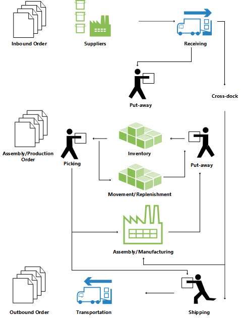

Design Details: Warehouse Overview
To support the physical handling of items on the zone and bin level, all information must be traced for each transaction or movement in the warehouse. This is managed in the Warehouse Entry table. Each transaction is stored in a warehouse register.
Warehouse documents and a warehouse journal are used to register item movements in the warehouse. Every time that an item in the warehouse is moved, received, put away, picked, shipped, or adjusted, warehouse entries are registered to store the physical information about zone, bin, and quantity.
The Bin Content table is used to handle all the different dimensions of the contents of a bin per item, such as unit of measure, maximum quantity, and minimum quantity. The Bin Content table also contains flow fields to the warehouse entries, warehouse instructions, and warehouse journal lines, which ensures that the availability of an item per bin and a bin for an item can be calculated quickly. For more information, see Design Details: Availability in the Warehouse.
When item postings occur outside the warehouse module, a default adjustment bin per location is used to synchronize warehouse entries with inventory entries. During physical inventory of the warehouse, any differences between the calculated and counted quantities are recorded in the adjustment bin and then posted as correcting item ledger entries. For more information, see Design Details: Integration with Inventory.
The following illustration outlines typical warehouse flows.

Basic or Advanced Warehousing
Warehouse functionality in Business Central can be implemented in different complexity levels, depending on a company’s processes and order volume. The main difference is that activities are performed order-by-order in basic warehousing when they are consolidated for multiple orders in advanced warehousing.
To differentiate between the different complexity levels, this documentation refers to two general denominations, Basic and Advanced Warehousing. This simple differentiation covers several different complexity levels as defined by product granules and location setup, each supported by different UI documents. For more information, see Design Details: Warehouse Setup.
Note
The most advanced level of warehousing is referred to as “WMS installations” in this documentation, since this level requires the most advanced granule, Warehouse Management Systems.
The following different UI documents are used in basic and advanced warehousing.
Basic UI Documents
- Inventory Put-away
- Inventory Pick
- Inventory Movement
- Item Journal
- Item Reclassification Journal
- (Various reports)
Advanced UI Documents
- Warehouse Receipt
- Put-away Worksheet
- Warehouse Put-away
- Pick Worksheet
- Warehouse Pick
- Movement Worksheet
- Warehouse Movement
- Internal Whse. Pick
- Internal Whse. Put-away
- Bin Creation Worksheet
- Bin Content Creation Worksheet
- Whse. Item Journal
- Whse. Item Reclass. Journal
- (Various reports)
For more information about each document, see the respective page topics.
Terminology
To align with the financial concepts of purchases and sales, Business Central warehouse documentation refers to the following terms for item flow in the warehouse.
| Term | Description |
|---|---|
| Inbound flow | Items moving into the warehouse location, such as purchases and inbound transfers. |
| Internal flow | Items moving inside the warehouse location, such as production components and output. |
| Outbound flow | Items moving out of the warehouse location, such as sales and outbound transfers. |